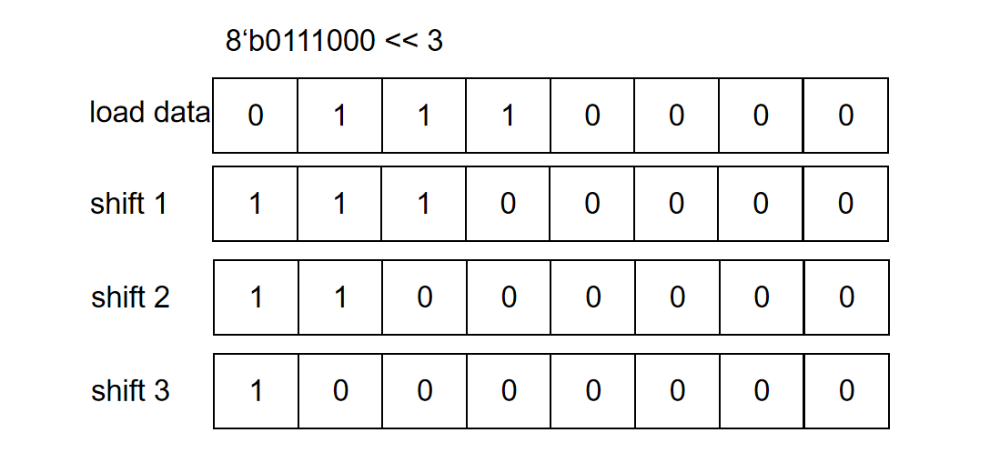
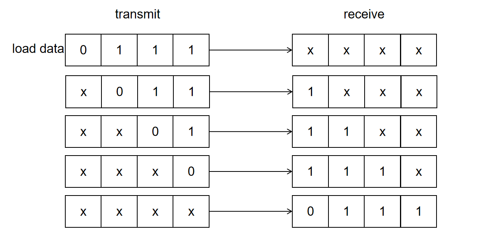
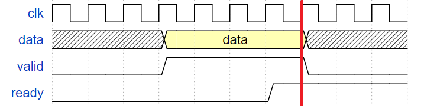
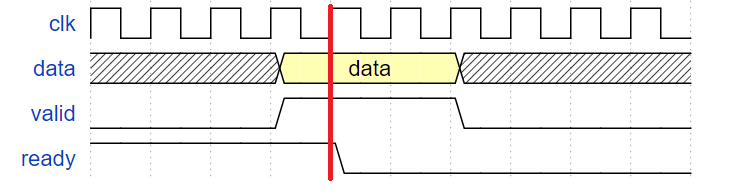
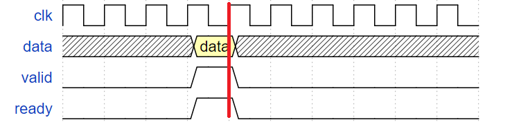
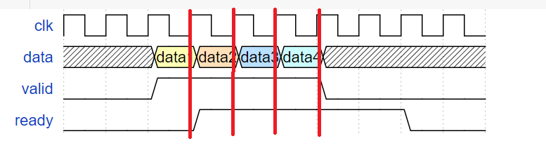
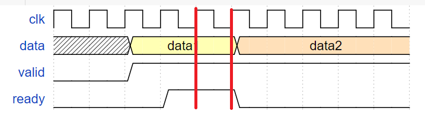

实验 4-1: 卷积模块 ¶
实验目的 ¶
- 学习使用 SystemVerilog 的 struct、package 等高级语法
- 学习掌握卷积操作的设计和实现
- 学习 valid-ready 的握手协议
实验环境 ¶
- 操作系统：Windows 10+ 22H2，Ubuntu 22.04+
- VHDL：Verilog，SystemVerilog
背景知识 ¶
卷积操作 ¶
基本概念 ¶
在泛函分析中，卷积、旋积或褶积（英语：Convolution）是通过两个函数 f 和 g 生成第三个函数的一种数学运算，其本质是一种特殊的积分变换，表征函数 f 与 g 经过翻转和平移的重叠部分函数值乘积对重叠长度的积分。
我们已经实现了加法和乘法的运算，他们是卷积运算的基础。
首先，我们学习一下卷积相关的基本概念，定义一个卷积层需要的几个参数。
- 卷积核大小（Kernel Size
） ：卷积核大小定义了卷积的视野。2 维中的常见选择是 3 - 即 3x3 像素矩阵。 - 步长（Stride
） ：步长定义遍历图像时卷积核的移动的步长。虽然它的默认值通常为 1，但我们可以使用值为 2 的步长来对类似于 MaxPooling 的图像进行下采样。 - 填充（Padding
） ：填充定义如何处理样本的边界。Padding 的目的是保持卷积操作的输出尺寸等于输入尺寸，因为如果卷积核大于 1，则不加 Padding 会导致卷积操作的输出尺寸小于输入尺寸。 - 输入和输出通道（Channels
） ：卷积层通常需要一定数量的输入通道（I） ，并计算一定数量的输出通道（O） 。可以通过 I * O * K 来计算所需的参数，其中 K 等于卷积核中参数的数量，即卷积核大小。
感兴趣的同学可以自行学习卷积的细节。
一维卷积 ¶
对于一维的情况，假设卷积核长为 \(k\)，对应的权重分别是 \([a_0, a_1, a_2, \ldots, a_{k-1}]\)。这里要处理的数据长为 \(m\)，对应的值分别是 \([b_0, b_1, b_2, \ldots, b_{m-1}]\). 那么得到的结果长为 \(m-k+1\)，对应的值分别是 \([c_0, c_1, c_2, \ldots, c_{m-k}]\)，其中 \(c_i = a_0b_i + a_1b_{i+1} + a_2b_{i+2} + \ldots + a_{k-1}b_{i+k-1}\).
在本实验中，假设 \(m=k=4\)，即只需要计算 \(c_0=a_0b_0 + a_1b_1 + a_2b_2 + a_3b_3\) 即可。
我们以下面这个例子简单介绍一下一维卷积和实际应用，对上面的学术定义加以阐述。
一维卷积
例如我们有一组电路会对某个模拟信道的输入进行离散数字电路的采样，在信道稳定的情况下可以得到数据信号100, 105, 103, 102, 107。但是因为信道发生了扰动，最后采样得到的信息是100, 105, 130, 102, 107，存在明显的异常值，因此采样电路需要一些策略来减少异常值的影响。
这里提出的策略是，将采样的值和相邻的两个数据取平均作为最后的采样结果。但是对于第一个数和最后一个数缺少相邻的值，因此需要在第一个数据前面补充一个 0，最后一个数据后面补充一个 0，从而确保计算可以执行。然后我们将预先填充的 0，采样得到的 100、105 输入一套电路，这个电路会将 0、100、105 取平均，也就是和 1/3 做加权求和，然后得到输出 68 作为第一个采样的结果。
然后我们继续采样下一个数据 130，然后将 100、105、130 计算得到的结果。
最后得到结果：
可以看到结果的两端填充了 0，中间部分的数据值都变得很相近了。因为采样的序列往往是非常长的，所以这里可以通过电路平滑采样数据，消除边缘奇异点的影响。
这里的平滑操作本质就是一个卷积操作，采样数据序列就是要被卷积的对象，(1/3、1/3、1/3) 的加权求和的权重就是卷积核，加权求和的过程就是卷积运算的过程，边缘填充的 0 就是 padding，处理后得到的结果就是卷积操作的结果。卷积的步长为 1，输入通道为 1，输出通道为 1。
用不同的卷积核可以得到不同的数据后处理效果，例如模糊、锐化、求导等等，在数字信号处理、图像信息处理、数值计算领域有及其重要的应用。下图这个例子是对数据序列 3, 4, 1, 5, 6 用卷积核(-2, 2, 1)进行输入通道数为 1、输出通道数为 1、步长为 1、两端无数据填充的一维卷积。大家可以自行演算这个样例，加深对卷积的印象。
移位寄存器 ¶
移位寄存器序列中，每个寄存器的输入都是上一个寄存器的输出。每个周期使能信号启用之后，除第一个寄存器载入新的值以外，其余寄存器载入上一个寄存器的值。因此，一维卷积操作中的采样数据的存储就可以用用移位寄存器组来实现，如下图。每当新的数据被采样时，移位寄存器更新为新的 3 个相邻数据，然后送为卷积操作模块执行计算。
移位寄存器的用途
-
移位寄存器可以用于实现算术运算，比如 C 语言中的移位计算就可以用移位寄存器实现。对于
a << N操作就可以先将数据 a 载入移位寄存器组，然后进行 N 次移位。使用移位寄存器进行移位计算需要的电路开销非常少，只需要若干寄存器和极少数的门电路即可；代价是移位 N 次需要 N 个周期。 -
移位寄存器可以用于维护数据队列。每次载入一个数据，挤出一个数据，就类似于队列执行一次
pop_front和push_back。而且电路开销非常少。 -
移位寄存器还用于串行传输。比如我们需要将 8 个 bit 发送给一个外部设备，可以选择并行输入的方式，提供 8 个输出引脚，然后用一个周期发送 8 个 bit，这样需要的传输周期很少，但是输入输出线路开销会很大。另一种是选择串行输入的方式，将数据载入一个 8 位的移位寄存器组，然后只提供一根输出线路，然后用 8 个周期将数据一位一位发送出去，虽然需要花费更多的时钟周期，但是线路开销很小。JTAG、USB、UART、PCIE 等常用设备都是串行传输的，它们的接口电路往往都包含了一组移位寄存器用于串行收发。

对于位宽为 1 的移位寄存器组可以用以下语法快速实现：
如果是向量寄存器的移位寄存器组，则要用 for 循环等语法实现，例如：
valid-ready 协议 ¶
start-finish 协议虽然为调用方和被调用方提供了简单的交互协议，但是在实际应用中存在一定问题。
start-finish 协议的缺点
- caller 模块无法知道 callee 模块是否处于空闲状态，只能采用保守的策略————当
finish=1之后再次使能start信号，确保 callee 一定处于空闲状态。这使得 caller 在start发送到finish返回的时间区间只能执行一次 callee 调用，但是很多时候 callee 也许可以连续执行多次 caller 调用，因此 caller 期望 callee 可以提供一个信号来表示自己是否空闲。 - callee 模块无法知道 caller 模块是否准备接受数据，只能采用冒险的策略————当
finish=1的时候，返回数据只保证一个周期有限，默认 caller 会立刻接受返回的计算结果。这要求 caller 的部分组件时刻准备着接收 callee 的结果，不然可能会错过 callee 返回的结果。因此 caller 期望向 callee 提供一个信号来表示自己是否准备就绪，防止 callee 在 caller 接受之前无效掉返回结果。
因此我们提供了 valid-ready 握手协议：
- 对于任何需要被发送的数据组合，发送方提供一个
valid信号，接受方提供一个ready信号。 - 发送方当数据线上的数据准备就绪的时候将
valid设置为 1，表示发送方数据准备就绪，然后持续等待接收方接收数据。 - 接收方准备接受数据就绪时将
ready设置为 1，表示接收方准备就绪，然后持续等待接收方接收数据。 -
当
valid=1且ready=1时，本次握手正式完成，在下个时钟上升沿接收方就会载入发送方放置在数据线上的数据。valid信号可以在ready信号之前、之后或者同时使能，两者保持独立。- 握手完成时，接收方必须立刻接收数据线上的数据，如果无法继续接受数据应将
ready设置为 0，如果不想继续接受数据可将ready设置为 0，如果还能接收数据且愿意接受数据则可以将ready继续保持为 1。 - 握手完成时，发送方本次发送的数据已经被接收，此时如果不打算继续发送数据则将
valid设置为 0；如果想继续发送数据则需要立刻撤换数据线上的数据，否则接收方会再次接受原来的数据请求，重复处理。
valid-ready 握手成功的时序图
下面展示了握手成功时的时序图，红线代表此时发送方和接送方握手成功。
   可以看到下图连续四个周期，接收方和发送方完成了四次数据握手传输。
 - 握手完成时，接收方必须立刻接收数据线上的数据，如果无法继续接受数据应将
-
需要注意的是：如果握手之后没有及时更换数据线上的数据，就比如下图的例子，data1 的数据就会被传输两次，而 data2 则暂时不会被接收方接受。在接收方视角里，发送方发送了两次数据传递，只不过两次数据的值是一样而已。
 -
发送方设置
valid信号和接收方设置ready本身应该尽量保持独立；特别的，在一些设计规则中，ready信号的设置可以等待valid信号的设置，但是valid信号的设置不应该等待ready信号的设置，防止死锁。
综上，我们可以将 caller 和 callee 之间的 request 和 resp 从原来的 start-finish 协议转换为如今的 valid-ready 协议：
并行加法树 ¶
卷积操作需要将 N 个乘积累加起来，例如 (((num0 + num1) + num2) + num3)。我们可以用如下电路实现：
但我们可以看到最长路径的时延是 N-1 个加法器的时延。
考虑到加法具有结合律，因此我们可以将上述算式转换为 ((num0 + num1) + (num2 + num3))，进而用如下电路加以实现：
可以看到这是一颗完全平衡树的结构，最长路径是 \(\log(N)\) 个加法器的时延，与链式相加相比，不带来额外资源开销，而且可以得到更好的时序性能。
下面给出并行加法树的实现代码，供大家参考：
实验步骤 ¶
实验前准备 ¶
与之前的 lab 相同，启动安装在你电脑中的 Ubuntu 22.04 环境（ WSL 或虚拟机cd 移动到 sys1-sp24 目录下，执行下面的命令：
根据包配置电路参数 ¶
我们将卷积模块相关的结构和参数定义在 repo/sys-project/lab4-1/include/conv_struct.vh的 Conv 包中，具体内容如下：
SystemVerilog 的语法参见附录部分。
实现卷积单元 ¶
参考之前卷积操作的实验原理，我们可以按照如下思路实现一个卷积单元：
- 移位寄存器负责存储所有需要计算的数据 data，kernel 输入是卷积计算的卷积核的权重
- data 和 kernel 的数据送入卷积单元执行加权求和得到卷积结果
- 当需要计算下一个数据的卷积结果的时候，只需要将被卷积的数据序列的下一个数据送入移位寄存器，顶掉最早进入的数据即可
下图是大致的电路图设计，其中移位寄存器的部分我们封装为 Shift 模块，卷积运算部分我们封装为 ConvOperator 模块：
Shift、ConvOperator 模块之间的数据传输， ConvUnit 模块和 caller 之间的数据传输都采用 valid-ready 协议。
请根据上面的原理图和模块间交互关系实现 lab4-1/submit/ConvUnit.sv 文件中的 ConvUnit 模块。
实现移位器模块 ¶
填写 lab4-1/submit/Shift.sv 文件，实现 Shift 移位寄存器模块。Shift 模块负责载入外部的采样数据并执行移位操作，然后将新的一组数据发送给后端的 ConvOperator 执行卷积运算，如此反复进行。所以 Shift 据有两个状态：
-
RDATA（receive data） ：接收数据状态，Shift模块和外部的 caller 握手载入in_data数据，此时不向后端的 ConvOperator 发送数据。当接收到数据之后进入TDATA状态。 -
TDATA（transmit data） ：发送数据状态，Shift 模块和后端的 ConvOperator 握手发送数据data，此时不接收来自 caller 的数据。当发送数据之后进入RDATA状态。
因此可以看到在卷积单元计算出数据的结果之前，Shift 模块就已经可以生成下一组待计算数据了，效率比之前的 start-finish 握手要快一些。Shift 模块的接口介绍如下：
需要注意的是，在我们 4.3 的电路图中，in_data 首先进入的是 data_reg[3]，然后依次向前移动，最后进入 data_reg[0]。
实现卷积运算模块 ¶
卷积运算模块中的乘法运算单元请使用 lab3-3/submit/Multiplier.sv 模块实现。卷积运算模块的运算电路可以参考以下的电路设计：
ConvOperator输入的data和kernel送入乘法器执行乘法操作。- 在乘法计算结束后，将乘法器输出的结果保存到
vector_stage1寄存器组中，寄存器的valid设置为 1，表示数据有效。 vector_stage1寄存器中的结果通过并行加法树累加得到最终结果，保存到vector_stage2寄存器中，valid设置为 1.vector_stage2的内容就是最后的result，通过这个模块的输出端口输出给 caller。
每个阶段开始执行的条件请大家自行思考，这里不再赘述。
卷积运算模块的有限状态机设计如下：
RDATA（recieve data） ：初始状态；数据接收状态，和shift握手接收数据，接收到数据后进入WORK状态，并启动乘法器，清空所有vector_stage中间寄存器的valid值。WORK（work） ：工作状态，等待乘法器、并行加法器依次执行计算，并把最后的计算结果存入vector_stage2电路。在vector_stage2寄存器的valid信号被设置为 1 之后进入TDATA状态。TDATA（tansmit data） ：数据发送状态，和 caller 进行握手发送result，发送完毕后返回RDATA状态。- 不要忘记
default状态。
以上实现仅供参考，大家可以根据自己的需要随意修改状态机和内部实现。但是不允许直接使用 * 乘法算子实现乘法。
模块接口如下：
仿真 ¶
仿真样例生成 ¶
在sim/testbench.v的仿真激励中生成不少于 16 组随机样例，并且 in_valid 信号的激励要满足 valid_ready 协议。
本次的 Judge.v 语法过于复杂，感兴趣的同学参见附录部分。
最后执行 make verilate，如果仿真通过最后会输出 success!!!，反之就是 fail!!! 和报错信息。
综合下板 ¶
top 模块电路图如下：
DataGenerator 模块提供测试数据，每按一下按钮 N17，DataGenerator 模块提供下一个数据并进行握手。运算的结果通过七段数码管显示，可以根据开关 sw 的值选择 128 位输出中的 32 位查看。测试数据保存在 initial_data.hex 中，将 include/initial_file.vh 的 DATA_FILE_PATH 修改为该文件的路径即可。
其中 sw 对输出数据的选择关系如下：
| sw 值 | 选择的输出 |
|---|---|
| 00 | result_reg[31:0] |
| 01 | result_reg[63:32] |
| 10 | result_reg[95:64] |
| 11 | result_reg[127:96] |
执行 make bitstream 下板验证即可。
为了便于对 DataGenerator 和 ConvUnit 协同工作进行仿真，这里提供了 sim/top_sim.sv 模块，可以对 top 模块进行仿真，大家可以在 Vivado 中自行使用。
实验报告 100% ¶
- 请在实验报告中详细描述每一步的过程并配有适当的截图和解释，对于仿真设计和上板验证的结果也应当有适当的解释和照片。80%
细分：
- 仿真通过，输出
success!!!40%- 综合实现卷积单元 40%
-
解释仿真测试样例和下板的顶层结构为什么满足 valid-ready 握手协议。20%
-
ConvUnit模块被划分为Shift模块和ConvOperator模块，模块间用 valid-ready 协议传递数据。请思考能否对ConvOperator作类似上述的模块分割和数据交换，并给出这样分割后可能带来的性能提升。 （bonus）5%
代码提交 ¶
验收检查点 100% ¶
- 仿真波形展示 30%
- 代码解释或设计思路 30%
- 下板验证 40%
提交文件 ¶
src/lab4-1/ 中编写的 submit、sim 和 include 的代码。